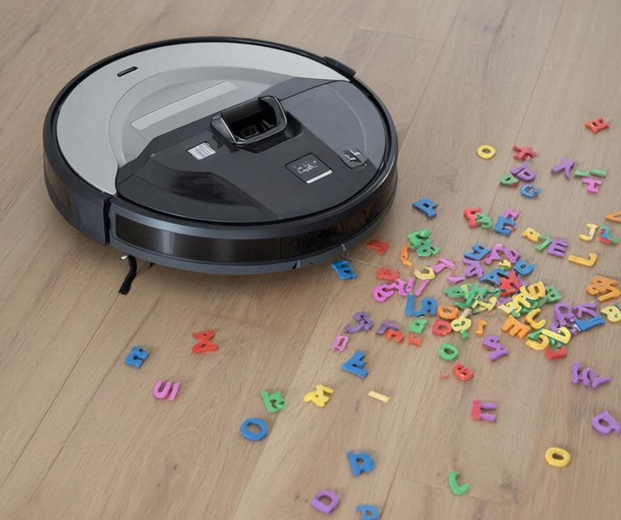

Введение
Редактирование текстов — своего рода «уборка»: выкинуть ненужное и расставить все по местам. Это можно сделать «дедовским» способом, тратя уйму времени на монотонные задачи, а можно воспользоваться современными инструментами, которых очень много, так что выбор за вами, и он непростой.
Мои обязанности как редактора переводных технических книг включают фактчекинг, соблюдение консистентности терминологии, стилистических и прочих норм русского языка, а также множества разных рутинных и нудных правил: работоспособность указанных url-адресов (битые или нет), единообразное употребление существительных, которые могут быть как одушевленными, так неодушевленными в зависимости от контекста (клиент = устройство и клиент = покупатель), вставка неразрывных тире и пробелов там, где нужно. Если первую часть требований проблематично автоматизировать с имеющимися у меня техническими возможностями (нужно создавать ИИ-агенты в привязке к LLM — большим языковым моделям, а это требует больших вычислительных ресурсов), то вторую вполне реально, используя встроенные инструменты Word, код на Python или генеративный ИИ общего назначения (генеративные — значит что-то создающие: текст, картинки, музыку и т. д.).
Работая с текстами, как большими, так и не очень, я опробовала разные варианты и отобрала для себя те, которые посчитала полезными. В этой статье я расскажу о некоторых из них.
1. Встроенные средства Word
Их возможности меняются от версии к версии и от одного обновления к другому, так что имейте это в виду, если вдруг рассказанные мною рецепты у вас не получатся.
а) Поиск с заменой (Главная —> Заменить)
Простенькая, всем известная функция, которая позволяет заменить обычный пробел на неразрывный (вводится в строку «Заменить» следующим образом: ^s), например, перед тире. Вообще-то, надо уточнить, что тире бывает коротким и длинным (на моей клавиатуре CTRL+минус и CTRL+ALT+минус). В строке «Заменить» не всегда удается воспроизвести их с клавиатуры, поэтому надежнее использовать символы ^= и ^+ соответственно: Найти [пробел с клавиатуры][^+] —> Заменить [^s][^+].
б) Горячие клавиши
Их можно настраивать для определенных знаков. Я настроила себе для знака ударения (аку́т): Вставка —> Символ —> Другие символы —> Набор: Объединенные диакр. знаки —> ́ —> Сочетание клавиш —> Новое сочетание клавиш —> Назначить. Теперь нажимаю CTRL+7 и получаю ударение. Это значительно быстрее и удобнее, чем набирать ALT+0769 обязательно со включенной цифровой клавиатурой, которая у меня обычно выключена, чтобы PgDn и PgUp не печатали цифры в тексте.
в) Макросы
Позиционируются как мощный инструмент, значительно расширяющий возможности Word. С помощью вкладки «Разработчик» можно в прямом смысле записать порядок своих действий: тех, которые повторяются и отнимаю много времени, а потом добавить значок на панель быстрого доступа. Я так и делала. Но потом однажды мои макросы просто перестали работать. Я переделывала, использовала VBA (код для макросов вместо записи порядка действий), но Word так и не увидел мои макросы — ни старые, когда-то работавшие, ни новые. Чтобы они заработали, надо поставить галочку напротив «Включить все макросы» в Центре управления безопасностью Word. Но это не рекомендуется, потому что может сделать комп уязвимым к вредоносным программам. Так что от макросов я отказалась.
Встроенные инструменты Word легко справляются с базовыми задачами, а если нужно сделать что-то нетривиальное (с помощью макросов и VBA), то придется приложить очень много усилий и результат не гарантирован. Зачем мне язык программирования VBA, используемый очень ограниченно, если есть Python — широко распространенный язык программирования, оснащенный огромным количеством библиотек, предлагающих богатую функциональность?

2. Мой универсальный помощник — код на Python
а) Проверка названий интерфейса
Началось всё с книги с большим количеством названий нерусифицированного интерфейса (около 800 уникальных названий). Некоторые были почти идентичными и различались только регистром первой буквы. Другие состояли из 2 слов и могли писаться как с пробелом (Actor F), так и в змеином (Actor_F) и верблюжьем (ActorF) форматах. Конечно, надо было найти и исправить опечатки. С помощью регулярных выражений (regex) — это шаблон, по которому можно найти в тексте нужное сочетание символов, в данном случае латинские буквы с символом «_» от пробела до пробела — я выудила все слова на латинице. В этом множестве оказались ссылки. С помощью регулярок (уже новый шаблон) я их убрала, потом посчитала количество вхождений каждого названия, отжала список от дубликатов и получила уникальные названия с числом вхождений. Затем вручную проверила каждый термин на наличие перевода при первом упоминании (поиском по тексту в Word). Нашлись опечатки: оказалось, что слова, встретившиеся в книге лишь один раз, содержали их. Можно было и для этой операции код написать. Но зачем, если поиском Word быстрее и — самое главное — надежнее? Мне платят не за скорость, а за безупречное качество текста.
б) Проверка битости ссылок URL
И далее пошло-поехало. Когда я сталкивалась с огромной тяжелой нудной задачей, предполагавшей механическую, усыпляющую, выбешивающую, но необходимую работу, я искала пути автоматизировать ее.
Попалась мне в работу очень хорошая книга о код-ревью (это проверка кода перед его выпуском в эксплуатацию). Автор — исключительной добросовестности человек: собрал все автоматические инструменты для проверки кода (а их десятки для разных языков) и не поленился найти ссылки на страницы этих инструментов. А было их 600+ штук.
Важно, что в Word нет никаких способов как-то проверить ссылки. Единственный вариант — писать код и использовать библиотеку requests, что и было сделано. В целом я была довольна результатами, но у применённого мною подхода был недостаток: для обработки использовался текстовый файл .txt, а не .docx. Это значит, что я получаю битые ссылки списком, а потом вручную ищу их в тексте. Но на тот момент меня это не смущало.
в) Проверка категории одушевленности
В русском языке есть слова, которые могут быть и одушевленными и неодушевленными, в зависимости от того, что подразумевается, вещь или человек, например, клиент — мобильное устройство и покупатель. Конечно, поиском по тексту можно найти все формы «клиента»/«клиентов» и проверить, какой это падеж (родительный или винительный), и исправить при необходимости. Но подметать веником в 21 веке уже не хочется: есть потребность в автоматизации работы.
Пришлось вспомнить навыки NLP (обработка естественного языка). Взяла модель для русского языка из библиотеки Spacy и с ее помощью определила падеж проблемных форм «клиента» и «клиентов». Если книга о маркетинге, то сохраняем целиком предложение, в котором «клиента/клиентов» в родительном падеже, а если о мобильных системах, то те, в которых рассматриваемая пара в винительном падеже. Что это даёт? Я дополнительно проверяю текст на ошибки и повышаю качество, не тратя слишком много времени.
г) Универсальный код
Убедившись в явной пользе и эффективности своих программ, я захотела создать универсальный код, чтобы запустить — и на тебе всё на блюдечке. Хотя в глубине души я понимала, что хочу слишком много. Но мечта такая была. Это как лежать на диване, а робот-пылесос делает всю пыльную работу за тебя. Надо просто нажать кнопку на смартфоне.
Была очевидная проблема: до этого я использовала текстовый формат файлов для обработки кодом, а при этом теряются все стили. Книги же мне приходили с уже назначенными стилями. Нужно было решение, которое их сохранит. И тут на помощь пришёл ИИ (DeepSeek), который посоветовал библиотеку python-docx. Она позволяет обрабатывать текст, предоставленный в формате docx, с сохранением стилей.
Почему я сразу не обратилась к этому ИИ, ведь он уже был доступен? Потому что у меня был негативный опыт с другим ИИ, который не помог мне даже с более простым кодом (не буду называть этот ИИ: может, разработчики уже всё исправили).
Работа заспорилась. Аппетит, как известно, приходит во время еды. Желание объединить в одну программу функции проверки ссылок и одушевленности для формата .docx быстро дополнилось другими хотелками: битые ссылки и неподходящие по одушевленности формы не в файл сохранять, а в тексте цветом выделять; а еще почему бы не заменить обычные пробелы на неразрывные там, где нужно, чтобы не тратить время на ручную работу; и надо статистику выводить в файл, чтобы знать, чего и сколько. Хотелки множились, код разрастался. Так я на собственной шкуре ощутила всю пользу функционального программирования: разделения большого кода на более мелкие фрагменты – функции.
Получившийся код бы назвала минимально жизнеспособным продуктом. Он не решает абсолютно все задачи, с которыми я сталкиваюсь, а только наиболее частые и затратные из них. Да и определить все задачи просто невозможно, потому что каждая книга уникально и задачи, стоящие при работе с ней, тоже. Поэтому в итоге я оставила в большой программе по предобработке текста только те функции, которые решают наиболее часто встречающиеся задачи и лично мне нужны в моей работе.
Программирование даёт однозначно больше возможностей, чем использование готовых инструментов Word. Поэтому я не жалею усилий, потраченных на изучение Python: они уже давно окупились.
3. ИИ в работе редактора
Сейчас по поводу ИИ много споров. С одной стороны, полно рекламы, обещающей научить писать крутые тексты с помощью ИИ и сразу же начать зарабатывать на этом кучу денег. С другой полно вакансий копирайтеров, в которых четко прописано, что требуется создавать абсолютно уникальные тексты строго без применения ИИ. Значит ли это, что добросовестный редактор не должен пользоваться генеративными моделями? Нет, не значит. Важно помнить, что ИИ — просто инструмент, а не манна небесная. Это удочка, которая может помочь поймать золотую рыбку, и использовать ее надо соответствующе, а не солить, вялить или жарить.
Я использую ИИ в следующих случаях:
1. Подбор синонимов и синонимичных выражений. В этом деле ИИ намного удобнее, чем специализированные сайты, хотя бы потому, что учитывает, как может, контекст и выдает связный вариант, а не просто слово.
2. Определение терминов. Но нужно перепроверять за ИИ, потому что он нередко галлюцинирует. Мой личный пример: ИИ пытался убедить меня, что перевозить на переднем сиденье автомобиля любой груз, даже женскую сумку, нельзя, потому что она… не пристегнута. Это, оказывается, опасно. Вот я рисковая-то! Так что фактчекинг и проверки — это необходимость, а не роскошь, если вы применяете ИИ.
3. Если переводчик забыл проставить в разделе «Благодарности» английские варианты написания фамилий (а обычно это очень длинный список через запятую), то можно задать ИИ промпт (инструкцию) вроде такого: «Вот имена на русском: [список]. Вот эти же имена на английском: [список]. Напиши в строчку через запятую имя на русском и в скобках то же имя на английском». И еще добавить пример, как это должно выглядеть (one-shot-обучение). И через пару секунд все готово. А вручную вставлять 30 имен, да еще скобки — очень нудно и долго.
И еще для генерации картинок. Все иллюстрации для данной статьи сгенерированы бесплатным GigaChat.
Для успешного использования ИИ нужно понимать базовые правила:
1. С конкретной моделью надо научиться работать: привыкнуть, приспособиться, понять, что она может и где ошибается. ИИ — это просто большой и сложный, но все-таки алгоритм. Не стоит безоговорочно доверять ему, как другу или гению.
2. Составляйте логичные, понятные и подробные промпты (вопросы и задания для модели). Это называется промпт-инжинирингом.
3. Если результат вас не устраивает, уточните свой промпт, поясните, чего не хватает и где ошибка.
4. Дайте ИИ примеры. Зачастую это лучше, чем длинный промпт. Пример можно дать один (one-shot-обучение) или несколько (few-shot-обучение).
5. ИИ может галлюцинировать, то есть выдавать правдоподобные, но не соответствующие действительности ответы. Перепроверяйте за ним.
6. ИИ общего назначения обучен на общедоступной информации из интернета, поэтому ожидать от него принципиально новых идей, скажем, для копирайтинга — безнадёжное занятие.
Заключение
Какой же инструмент самый полезный? Это зависит от поставленных задач и конкретного проекта. Возможности встроенных инструментов Word, кода и ИИ очень разные. Word подходит для базовых задач, а с кодом можно замахнуться на что-то поинтереснее, но нужно уметь хоть немного программировать. ИИ предоставляет ещё большие возможности, но и здесь нужно научиться ими воспользоваться.
Важно применять имеющиеся инструменты уместно и с пользой. Это поможет сэкономить уйму времени, высвободив его для действительно важных и не доступных алгоритмам задач — творческих.